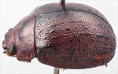
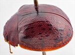
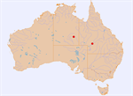

Click on images to enlarge
{kind=link}

Female, Jervois, Northern Territory
{kind=link}

Female, Windorah, S.W. Queensland
{kind=link}

Name
Trachymela sp. Ta133
Reference specimen
2007-131, Jervois, Northern Territory.
Adult Description
Length: ♀ 9.2-9.9 mm [2], ♂ ? mm [0].
[description based on the two (female) specimens available]
Colour: head: frons uniformly mid- to dark brown, clypeus black [Jervois] or dark brown [Windorah], labrum yellow-brown, mandibles brown with black tips; antennae completely and uniformly light brown; pronotum: brown, similar shade as head; foveal areas with a well-defined round black spot, sometimes [Jervois] vague darker brown area extends from edge of disc just anterior to centre obliquely inwards towards midline, lateral margin and lateral section of anterior margin black; scutellum: very dark brown, almost black [Jervois] or brown, similar to adjacent surface of pronotum, with lateral margins broadly darker brown [Windorah]; elytra: brown, same shade as pronotum, with marginal area similar in shade, elytral disc with several longitudinal rows (most prominently, VR3, VR5 and VR8) of black tubercles, mostly small and isolated but a few in the form of short longitudinal weals, black verrucae are mostly asynchronous between rows over the anterior half of disc, but line up very roughly in a broad transverse rows in a region about 80% of distance to apex, elytral suture fully black [Jervois] or black from scutellum to summit [Windorah], punctures of same shade as interstices, humeral callus black; venter: dark-brown, almost completely so [Windorah] or with patches of black and black legs [Jervois], epipleura light-brown [Windorah] or much darker, though not black [Jervois]. Cuticular wax: unknown.
Shape: elytral summit anterior to middle of elytral margin; Head; finely and quite evenly and densely punctured (pd~1.5-2.5xef) with some scattered, much smaller, punctures also present. Antennae moderately long (AL ♂=?%BL, ♀=36.1%BL), filiform. Pronotum; almost evenly curved transversely over discal area, with foveal depression present only in anterior portion, a very slight [Jervois] or more prominent [Windorah], round elevated area situated directly behind centre of eye, puncturation on disc clearly impressed, similar in size or fractionally smaller than on head with much finer punctured scattered among the larger, evenly distributed and dense in discal area, interstices in discal area smooth, never obscuring punctures, punctures becoming much coarser towards margin. Front margins join lateral margins in a smoothly rounded right-angle, with lateral margin usually straight for almost half distance before curving smoothly and gradually towards rear margin. Scutellum; surface smooth and unpunctured [Jervois] or lightly punctured, punctures similar in size to those on adjacent surface of pronotum [Windorah]. Elytra; surface evenly curved transversely throughout with slightly explanate margins only in posterior third, punctures moderate-sized and relatively evenly and densely distributed on disc, only fractionally larger but slightly less dense in marginal area, several longitudinal series of verrucae, many round and others extended longitudinally as short ridges, are present on disc, most commonly on VR3, VR5 and VR8, verrucae are also usually present in other rows, but are smaller and less conspicuous, verrucae may have a rough surface (Jervois] or be smooth [Windorah], see “colour” above for distribution of verrucae, elytral suture not carinate in posterior third, lateral margin ascending in anterior quarter, surface discontinuous under humeral callus. Vertical extension of epipleura moderate (HCE/PW=0.27-0.32). Venter; Prosternal process prominently broad and almost parallel-sided throughout its length [Jervois] or narrowing anteriorly [Windorah], open anteriorly, a sparse scatter of short setae on prosternal process and mesosternum, a single seta on anterior and median trochanter; front edge of metasternum beveled, truncate; inner edge of epipleura with a line of setae from level of hind coxae to apex. Aedeagus; unknown.
Larvae
unknown.
Eggs
unknown.
Notes
There is a possibility that this is the same species as T. sternalis (Blackburn), though the type is smaller and the distribution of verrucae and black markings somewhat different. See the discussion under that species for more.
The two female specimens included here were collected from different locations in the arid central Australia and differ in several respects. The prosternal process of the Windorah specimen is not at all prominently broad and parallel-sided as that of the Jervois specimen. The Windorah specimen has the elytral suture black only from scutellum to the summit and its clypeus is not black. Its verrucae tend to be slightly larger and smoother than those of the Jervois specimen but are in similar positions. Other differences between the two specimens are noted in the description.
The Jervois specimen was collected at MV lights, while the Windorah specimen was found sheltering under eucalypt bark. Without more material, particularly male specimens and/or host records, little more can be said about the taxonomic status of these specimens.
Copyright © 2026. All rights reserved.